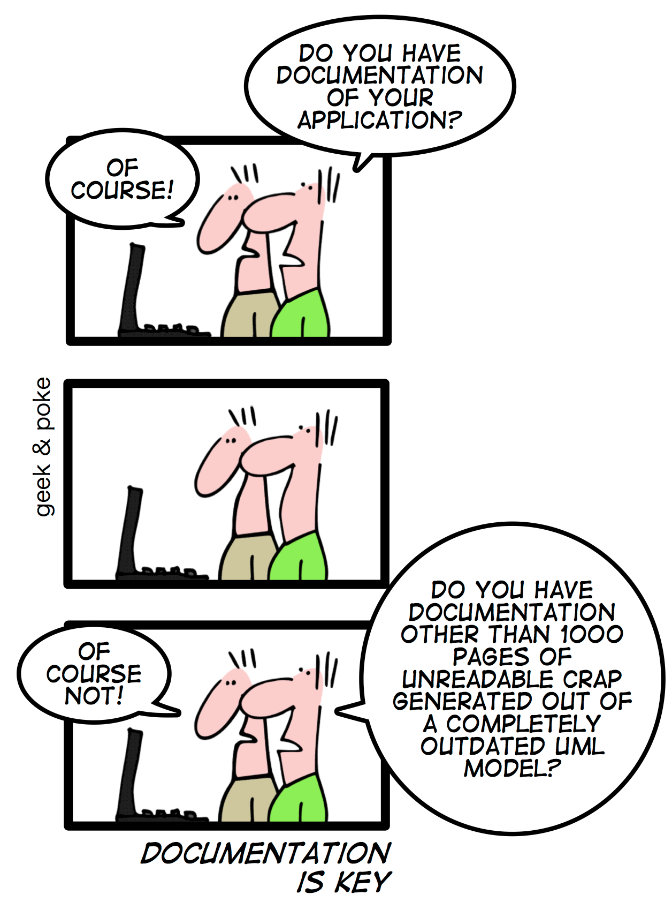

Living Docs || Documentation as Code
$ echo whoami
|
Everything you see here is on GitHub
PLAN
What? (…is the problem)
Why? (…does it happen)
How? (…to solve it)
This presentation is not about the tools.
|
It’s also not about "Living Documentation" that comes from BDD. But it is about keeping the documentation alive. |
What?
What?
|  |
If it isn’t documented – it doesn’t exist
"If it isn’t documented, it doesn’t exist." Not only does it have to be doc’d, but it was to be explained and taught and demonstrated. Do that, and people will be excited — not about your documentation, but about your product.[1]
Lack of documentation is the reason good libraries fail
"Lack of documentation. No matter how wonderful your library is and how intelligent its design, if you’re the only one who understands it, it doesn’t do any good. Documentation means not just autogenerated API references, but also annotated examples and in-depth tutorials. You need all three to make sure your library can be easily adopted." (Nicholas Zakas, the number one reason why good JavaScript libraries fail)
There’s one other thing which can really make or break a JavaScript library, and it’s surprising how often it’s overlooked, because the same thing makes or breaks an awful lot of software in other fields: documentation. The greatest library in the world would fail if the only way to learn it was reading the code. There is absolutely no substitute for full, well-written documentation. (James Bennett, choosing a JavaScript library)
"Did you read the docs before opening this issue?"
But why don’t people read the docs?
How many confluence bookmarks do you have?
If you need to bookmark confluence pages, it’s because they’re hard to find |
Confluence isn’t the only place where software is documented
Where documentation lives?
|
Lack of Trust == Significantly Reduced Value
|
“Great software does not need documentation” (…or tests)
You don’t write documentation for yourself. You write it for the new team member who’s joining soon, your future replacement, and even for your poor future self. In 6-months you are going to look at the code you’re working on now and think: "Who the hell wrote this and what does it even mean?" (spoiler: It was you who wrote it) |
Why?
Common Causes
|
Documentation Graveyard 2.0
One of the reasons why a tool such as Confluence ends up being a graveyard for docs is that it is outside the normal software development workflow. Only after the code is merged do you remember (that is, if you remember) to go to this separate place, and only then you start thinking about how to document what you had already released. Doesn’t all of this seem backwards to you? |
What makes well-documented software?
High-level architecture designs.
High-level overviews of each part of the library, touching on key objects and methods.
Practical examples showing how to handle common use cases.
Full API documentation for all public functionality.
Internal functionality should ideally be also documented to help contributors understand the code better.
Comments throughout the code.
Easily accessible to everyone && Easy to maintain by everyone.
How?
Put your documentation in source control with the code it is describing
Ask for documentation updates in pull requests when it’s appropriate, just like you would expect tests for a code change
Create a documentation style guide for your team to follow
"Every big architectural decision must be recorded in as an ADR" ( ADRs are also stored with the code they are related to)
"Every repo needs a high level architecture diagram describing the main data structures and processes”
"Every repo must have a README with A, B, C sections"
"Every repo must have API documentation"
…
An example of a well-documented software
An example of a well-documented software
An example of a well-documented software
An example of a well-documented software
An example of a well-documented software
An example of a well-documented software
An example of a well-documented software

An example of a well-documented software
What if I told you
The Problem
How do we keep the documentation with the source code, and at the same time make it accessible to everyone? |
The Solution
The Solution
Markdown
Markdown
Viewable / Editable in any text editor
Very readable even when opened in a notepad
Platform-agnostic, plaintext, and zero-dependencies on external software
Easier to write than HTML
Eeasily converted to HTML
Can be used by anyone, not just developers
Why not another markup syntax?
What distinguishes Markdown from many other lightweight markup syntaxes, which are arguably often easier to write, is its readability. |
Why not another markup syntax?
As Gruber writes:
|
Markdown vs. Asciidoc
What next?
We have a few dozen docs written in markdown which are stored with the code. So now what?
Static Site Generation
|
Ease of Use
Whichever tool you pick, it should have a very low entry threshold… ...for everyone who is going to use it, not just a small group of devs |
Demo
Thank You
Questions?
If you didn’t document it… ...you didn’t do it. |